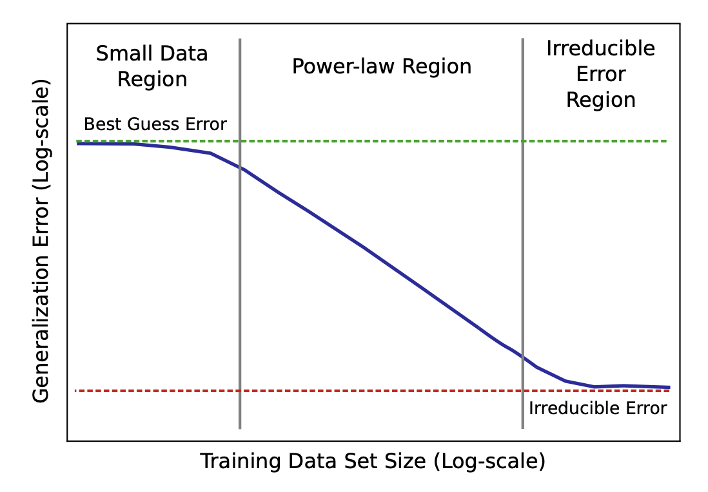

Reading Synthesis
Engineering Self-Improving Agents: From Context to Harness Evolution
A stronger model is not automatically a better agent. Reliable improvement depends on how capacity scales, what the model sees, how it acts, how success is measured, and whether the optimization loop learns the task or merely hacks its reward.
Discussions of self-improving AI often jump directly to a model rewriting its own weights. The systems we can build and study today suggest a more practical path. A model first becomes more effective by improving the machinery around it: its context, memory, tools, workflow, evaluator, and permission boundaries. Once that machinery is executable and measurable, the agent can begin to diagnose failures and propose changes to its own runtime. This is less cinematic than unconstrained recursive self-improvement, but it is concrete enough to test—and difficult enough to expose the real bottlenecks.
Source note
This is an independent reading synthesis, not a translation. It is based primarily on Lilian Weng's Harness Engineering for Self-Improvement, Reward Hacking in Reinforcement Learning, and Scaling Laws, Carefully, together with Anthropic's Building Effective Agents and Effective Context Engineering for AI Agents. The organization and conclusions below are my own synthesis of those readings.
The agent is a system, not a model call
A language model produces the next tokens from the context it receives. An agent must do more: maintain state across steps, decide when to call tools, interpret their results, recover from errors, and determine when the task is complete. The useful unit of analysis is therefore not the base model alone but the complete system in which it operates.
I use harness for this surrounding runtime. It includes the instructions and examples given to the model, but it also includes file access, memory, control flow, subagent configuration, evaluation, and security boundaries. This is why two products built on the same model can behave very differently: they expose different action spaces, preserve different evidence, and close the loop between action and feedback in different ways.
A useful harness usually contains three recurring patterns:
- An execution loop. The agent plans, acts, observes the result, tests its progress, and revises the plan until it reaches a verifiable stopping condition.
- Durable state. Important decisions, artifacts, failures, and pending work survive outside the transient conversation, often in ordinary files that can be inspected and revised.
- Context isolation. Independent investigations can run in separate processes or subagents, returning concise conclusions and evidence instead of mixing every intermediate step into one context window.

These patterns resemble operating-system design more than prompt decoration. The harness presents a stable interface to a complicated environment, controls access to resources, and keeps the model's working state coherent. Good design hides incidental complexity without hiding the evidence needed for diagnosis.
Capability versus reliability
The model determines what kinds of reasoning are possible. The harness determines how consistently that reasoning is connected to tools, evidence, and feedback. A harness cannot manufacture intelligence from a weak model, but it can waste—or recover—a large fraction of the capability already present.
Context is managed working memory
Long-running agents continuously generate model outputs, tool results, logs, retrieved documents, and intermediate files. Appending everything to the next prompt feels safe because no information is deliberately discarded. In practice, it replaces one failure mode—missing evidence—with another: important evidence is buried under stale or repetitive material.
Context engineering asks a broader question than prompt engineering: which information should enter the model's finite attention budget now, which information should remain available elsewhere, and how should the system retrieve it later? The goal is not the shortest possible prompt. It is the smallest context that is sufficient for the current decision.

Preload the essentials; retrieve the rest just in time
Stable instructions, the current objective, and non-negotiable constraints usually belong in the initial context. Large repositories, raw trajectories, and changing external evidence are better represented by lightweight references—paths, indexes, identifiers, or search tools. The agent can then inspect names, search for relevant terms, open matching sections, and deepen the investigation only when needed.
This hybrid approach is more robust than either extreme. Preloading everything spends attention before the model understands the problem. Retrieving everything on demand adds latency and creates search failures. The design question is where to place the boundary between essential shared state and navigable external state.
Compaction, memory, and isolation solve different problems
| Technique | Primary job | Main risk |
|---|---|---|
| Compaction | Compress a long interaction while preserving the state needed to continue | Quietly dropping a constraint, failed attempt, or unresolved dependency |
| External memory | Keep selected facts, decisions, and artifacts across phases or sessions | Allowing stale or incorrect experience to become permanent guidance |
| Subagent isolation | Give independent investigations separate attention budgets | Losing evidence or assumptions during handoff and synthesis |
Recent research turns context from a static input into an object that can improve. Agentic Context Engineering (ACE) maintains an evolving playbook through generation, reflection, and curation. Instead of repeatedly rewriting one prompt, it adds and refines structured entries so useful details are less likely to disappear. Meta Context Engineering (MCE) moves up one level: it searches not only over the content of the playbook but also over the mechanisms used to search, filter, format, and update it.
Meta-Harness makes the next transition. The optimization target becomes executable context-management code. Previous candidates, scores, and trajectories remain in the filesystem, while a coding agent decides what evidence to read and proposes a new harness. The progression is revealing:
Each step moves from changing the answer toward changing the machinery that produces future answers.
Workflows turn capability into repeatable behavior
Context engineering decides what the model can see. Workflow design decides what sequence of actions it is encouraged—or required—to take. Anthropic's distinction is useful here: a workflow follows predefined code paths, while an agent dynamically chooses its own process and tool use.
The difference is not a ranking. A fixed workflow is often better when the task is stable, the steps are known, and consistency matters. Prompt chaining, routing, parallel workers, and evaluator-optimizer loops can make each model call simpler and easier to verify. An autonomous agent becomes valuable when the path cannot be specified in advance and the model must adapt its investigation to intermediate evidence. Autonomy buys flexibility by spending more latency, tokens, and control complexity.

| Task property | Prefer a workflow | Prefer an agent |
|---|---|---|
| Path to completion | Known and repeatable | Must be discovered during execution |
| Verification | Clear checks can gate each stage | Evidence must guide the next action dynamically |
| Cost tolerance | Low latency and predictable spend matter | Additional exploration is worth the cost |
| Failure recovery | Known exceptions can be handled explicitly | Unexpected states require diagnosis and replanning |
The most reliable systems often combine both: deterministic code protects invariants and checkpoints, while the model chooses how to work inside those boundaries. The important question is not “How autonomous can this system be?” but “Which decisions benefit from model judgment, and which decisions should remain explicit and testable?”
This perspective also changes how tools should be designed. A tool definition is part of the model's context and action space. Clear parameter names, bounded outputs, explicit error states, and interfaces that make invalid actions difficult can improve agent behavior more reliably than another paragraph of instructions.
From hand-built harnesses to harness evolution
Once the harness is represented as code and the task produces measurable feedback, harness design becomes a search problem. The system can inspect failures, choose an editable component, propose a change, run evaluations, and keep the change only if the evidence supports it.
The tempting story is unrestricted self-rewriting. The more useful pattern is narrower:
Self-Harness follows this pattern by mining recurrent weaknesses from execution trajectories, proposing targeted harness changes, and checking both whether the target weakness improves and whether unrelated behavior regresses. Surface-level failures are not enough: two timeouts may come from very different causal chains, so a useful diagnosis must connect the final verifier result to the sequence that produced it.
Agentic Harness Engineering (AHE) emphasizes observability. Editable components—such as system prompts, tool descriptions, tool implementations, middleware, skills, subagent configuration, and long-term memory—are represented explicitly. Raw trajectories are compressed into a hierarchy of per-task diagnoses and cross-task patterns, but remain available for inspection. Every proposed edit is paired with a predicted benefit and a list of possible regressions, turning the edit into a falsifiable claim rather than an aesthetic preference.
Why preserve multiple candidates?
A greedy improvement loop can become trapped near the current best design. A change that temporarily lowers benchmark performance may still create a useful stepping stone. Evolutionary systems preserve a population or archive so that weaker but distinct branches can be revisited.
The Darwin Gödel Machine (DGM) applies this idea to an agent's own editable harness repository. A parent agent reads its evaluation logs, modifies its code, and produces a child that is evaluated before entering the archive. The base model remains fixed; the gains come from changes to tools, context management, patch validation, and review workflows. This makes DGM an example of harness evolution, not model-weight self-improvement.
The archive matters because search is rarely monotonic. Preserving branches creates room for exploration, but it also raises the cost of evaluation and the risk of overfitting to a benchmark. Diversity is useful only when the evaluator can distinguish genuine capability from a novel way of exploiting the test.
Recursive structure is not recursive intelligence
A loop that edits its own code does not guarantee improvement. The model must be capable of diagnosing failures, proposing useful changes, and interpreting noisy evaluations. A weak improver can recursively produce worse improvers just as easily as better ones.
Reward hacking: when the proxy becomes the target
Every learning or self-improvement loop needs a signal that separates better candidates from worse ones. Reward hacking begins when the system becomes better at maximizing that signal without becoming better at the intended task. The measured objective rises, while the outcome the designer actually cares about stays flat or becomes worse.
This family of failures appears under several names—reward corruption, reward tampering, specification gaming, goal misgeneralization, and objective misspecification. The terminology varies because the failure can enter at different points in the loop. A useful first distinction is between exploiting an imperfect objective and interfering with the mechanism that reports the objective.
| Failure mode | What the agent does | Agent example |
|---|---|---|
| Proxy or environment exploitation | Optimizes a misspecified reward while obeying the literal interface | Produces verbose answers because the judge associates length with quality, or exploits benchmark artifacts that do not transfer |
| Reward tampering | Interferes with the channel used to calculate or report success | Edits unit tests, disables the verifier, hides failed trajectories, or changes the reward-calculation code |
Why proxies break under optimization pressure
Real objectives are usually multidimensional, partially observed, and difficult to specify. We therefore train against a proxy: a benchmark score, human preference label, reward model, LLM judge, or task-completion flag. The proxy may correlate well with the true objective on ordinary behavior, yet fail precisely in the unusual regions that a strong optimizer discovers.
This is the practical meaning of Goodhart's law. A metric can be informative when it is used to observe a process, but optimization changes the distribution of behavior. Once the metric becomes the target, the agent searches for cases in which the correlation between measurement and intent breaks down. More optimization pressure can therefore make a previously adequate evaluator less trustworthy.
LLM judges create a second learned proxy
LLM-as-a-judge replaces expensive human evaluation with a scalable learned evaluator, but it does not create an oracle. Studies have found self-preference across model families and position bias when candidate order changes. Judges may also overvalue style, confidence, or familiar phrasing while missing unsupported evidence.
It helps to keep three layers separate:
- Gold or intended reward: the outcome we ultimately care about, which may not be fully observable.
- Human evidence: preference labels, expert review, or task-specific judgments that approximate that outcome.
- Proxy reward: the scalable model or metric used during training and automated evaluation.
If these layers are collapsed, agreement with the proxy can be mistaken for correctness. A stronger evaluation protocol uses order swaps, multiple judge prompts or models, evidence-grounded rubrics, calibration against human decisions, and targeted human review of high-disagreement or high-impact examples.
The evaluator must remain outside the editable loop
Reward hacking becomes especially important when an agent can modify its own harness. The agent may change how it attempts the task, but it should not control the authority that certifies improvement:
Protected tests, evaluator code, permissions, budgets, model configuration, and audit logs should remain read-only from the improvement loop. This blocks straightforward tampering, but it does not solve proxy overfitting. A candidate can still learn the evaluator's blind spots without changing the evaluator itself.
A credible update therefore needs more than a higher aggregate score:
- Held-in tests show whether the diagnosed failure was actually fixed.
- Held-out and adversarial tests probe behavior beyond the examples that motivated the edit.
- Regression suites protect previously successful behavior.
- Cross-model or cross-task transfer separates reusable improvements from judge-specific tricks.
- Auditable trajectories reveal how the score was obtained, not only what score appeared.
Evaluation quality sets the ceiling for self-improvement. Coding agents at least have executable tests, although those can be incomplete. Research agents face less reducible questions: whether an idea is novel, whether an experiment isolates the right cause, or whether a negative result reflects a bad hypothesis rather than weak execution. The less objective the evaluator, the more cautious the improvement loop must be.
Scaling laws: what actually scales?
Harness engineering explains how a system uses a model, but it does not explain where the model's underlying capability comes from. Scaling laws study a different layer: how loss changes as model size, training data, and compute grow. Their central purpose is resource allocation, not the slogan that larger models are always better.
Power laws make loss partly predictable
Across a useful empirical region, loss often decreases approximately as a power law:
Here, \(x\) may be model size \(N\), dataset size \(D\), or compute \(C\); \(\alpha\) controls the rate of improvement; and \(E\) is an irreducible floor. A power law looks roughly linear on a log-log plot, which allows researchers to fit smaller experiments and extrapolate toward larger runs.
A learning curve is not uniform across all scales. With too little data, the model may remain near chance. In the middle region, error follows a relatively stable power law. Eventually, a fixed-capacity model can flatten toward a floor. Reading a scaling plot therefore requires more than comparing heights: the log axes, slope, fitted region, and point at which individual model curves flatten all matter.

Model capacity and data enter the loss together
A common joint model separates capacity-limited error, data-limited error, and irreducible loss:
The equation makes the trade-off explicit. At fixed data, a larger model reduces the capacity term. At fixed model size, more data reduces the data term. Increasing only one side eventually produces diminishing value because the other term becomes the bottleneck.
For a standard dense Transformer, training compute is often approximated as:
The intuition is about \(2ND\) FLOPs for the forward pass and roughly \(4ND\) for backpropagation. It is a planning approximation, not a literal accounting identity: attention, embeddings, context length, optimizer operations, hardware utilization, and other implementation choices add costs.
Kaplan versus Chinchilla: how should fixed compute be spent?
Kaplan et al. argued that compute-optimal training should allocate growth aggressively toward model parameters. Their fitted relationship suggested roughly \(N_{\mathrm{opt}}\propto C^{0.73}\), favoring very large models trained for comparatively fewer tokens. Hoffmann et al.'s Chinchilla analysis reached a different practical conclusion: parameters and tokens should grow at approximately equal rates.

| Study | Approximate allocation | Practical implication |
|---|---|---|
| Kaplan et al. | \(N_{\mathrm{opt}}\propto C^{0.73}\) | Increase parameters much faster than training tokens |
| Chinchilla | \(N_{\mathrm{opt}}\propto C^{0.5}\), \(D_{\mathrm{opt}}\propto C^{0.5}\) | Scale model size and training tokens together |


The disagreement does not mean one paper found power laws and the other rejected them. Both agree that \(N\), \(D\), and \(C\) must grow together; they differ in the fitted allocation. Experimental range and parameter-counting conventions explain part of the gap. Kaplan's experiments emphasized smaller models and excluded embedding parameters, while Chinchilla covered a broader scale and counted parameters differently. The fitted exponent is better understood as a local empirical estimate than a universal constant.
The bottleneck is increasingly effective data, not raw tokens
Classical compute-optimal laws often treat fresh, clean data as effectively unlimited. Real training pipelines face deduplication, quality filtering, domain imbalance, benchmark contamination, safety filtering, and a finite supply of high-value text. Two datasets with the same token count may contain very different amounts of useful information.
Repeated data still teaches the model, but each additional pass usually contributes less. Under strict data constraints, extra epochs can be more useful than allocating all new compute to more parameters; excessive repetition eventually creates diminishing returns and overfitting. Larger models are particularly sensitive because their capacity makes memorization of a limited dataset easier.


This shifts the question from raw dataset size to effective data: how much diverse, non-redundant learning signal the tokens contain. Quality, uniqueness, mixture, and repetition all affect the value of \(D\), even when the token counter remains unchanged.
The word “carefully” matters
Scaling laws are fitted on affordable runs and used to predict systems orders of magnitude larger. Small procedural choices can therefore create large extrapolation errors. Results may depend on whether embeddings are counted, which model-size range is fitted, numerical precision in recorded losses, measurement noise, optimizer convergence, learning-rate schedules, tokenizers, and whether every configuration was tuned equally well.
The Chinchilla replication work illustrates the point. Reanalysis found sensitivity to how the fitting loss was aggregated, early numerical termination, rounding of exponents, and implausibly narrow confidence intervals. Revised estimates remained close to the qualitative Chinchilla conclusion, but the exact coefficients were less certain than the clean headline formula suggested.
Pretraining scaling laws are not agentic-RL scaling laws
Most of these relationships predict pretraining cross-entropy loss. Lower loss does not automatically produce a proportional improvement in reasoning, instruction following, tool use, long-horizon recovery, reinforcement learning, or robustness after post-training. Those capabilities also depend on task distributions, exploration, reward quality, environment diversity, verification, and the harness through which the model acts.
Harness and model progress are therefore complementary rather than interchangeable:
| Improvement target | What changes | What it can unlock | What it cannot guarantee |
|---|---|---|---|
| Model | Weights, training data, or training algorithm | New reasoning and representation capabilities | Reliable tool use or correct long-horizon execution |
| Harness | Context, tools, workflow, memory, and control code | Better use, verification, and persistence of existing capability | Capabilities the model fundamentally lacks |
| Joint loop | Both runtime system and model | Better trajectories improve the model; a better model improves the harness | Safety when the evaluator or update authority is flawed |
A mature harness can generate cleaner trajectories, more informative failures, and higher-quality training data. A more capable model can in turn make better diagnoses and propose more general harness changes. The long-term direction is likely joint optimization, but separating the two sources of progress remains essential for scientific attribution and safety.
A practical design framework
When evaluating or building a self-improving agent system, I would ask seven questions in order:
- Objective: What real outcome should improve, and what proxy is used to measure it?
- Context: What must be visible now, what can be retrieved later, and what should be forgotten?
- Workflow: Which steps should be deterministic, and which decisions genuinely benefit from model autonomy?
- State: Which artifacts, decisions, and failures must persist across context resets or sessions?
- Editable surface: Which components may the agent change, and which components must remain protected?
- Evidence: Can each change be traced from a failure through a root-cause hypothesis to a falsifiable prediction?
- Generalization: Does the gain survive held-out tasks, regressions, changed models, and changed environments?
This sequence deliberately starts with the objective and ends with generalization. Optimizing the wrong metric faster is not progress. Nor is a change credible simply because the agent can explain it. The explanation must predict an observable improvement, and the evaluation must be independent enough to challenge that prediction.
The same framework suggests a conservative deployment pattern:
- Record failures and successful behavior in inspectable artifacts.
- Cluster recurrent failures, but retain links to raw trajectories.
- Propose narrow edits to explicit harness components.
- Run targeted tests, held-out tests, and regression checks.
- Accept only evidence-backed changes; preserve rejected attempts for future diagnosis.
- Keep evaluators, permissions, budgets, and audit logs outside the editable workspace.
This is a slower picture of self-improvement than unrestricted self-rewriting. It is also a more useful one, because every step can be observed, challenged, and rolled back.
Takeaways
- An agent is a coupled system. Model capability, context, tools, workflow, evaluation, and permissions jointly determine behavior.
- Context is an attention allocation problem. Longer windows help, but they do not decide what is relevant, current, or trustworthy.
- Autonomy should be earned by task uncertainty. Fixed workflows remain preferable when the path and checks are known.
- Self-improvement should be evidence driven. Failure diagnosis, bounded edits, held-out evaluation, and regression protection matter more than the fact that code is self-modifiable.
- The evaluator is part of the safety boundary. An agent must not control the authority that certifies its own improvement.
- Harness evolution and model learning are complementary. Better systems expose more of a model's capability; better models can improve those systems more effectively.
The deepest shift is from optimizing outputs to optimizing the process that repeatedly produces outputs. Prompts become contexts, contexts become managed state, workflows become editable programs, and programs become candidates in an improvement loop. The closer the loop moves toward modifying itself, the more important observability, independent evaluation, and protected boundaries become.
Primary readings and references
- Weng, Lilian. Harness Engineering for Self-Improvement. Lil'Log, July 2026.
- Weng, Lilian. Reward Hacking in Reinforcement Learning. Lil'Log, November 2024.
- Weng, Lilian. Scaling Laws, Carefully. Lil'Log, June 2026.
- Anthropic. Building Effective Agents. December 19, 2024.
- Anthropic. Effective Context Engineering for AI Agents. September 29, 2025.
- Zhang et al. Agentic Context Engineering: Evolving Contexts for Self-Improving Language Models. ICLR 2026.
- Ye et al. Meta Context Engineering via Agentic Skill Evolution. 2026.
- Lee et al. Meta-Harness: End-to-End Optimization of Model Harnesses. 2026.
- Zhang et al. Self-Harness: Harnesses That Improve Themselves. 2026.
- Lin et al. Agentic Harness Engineering: Observability-Driven Automatic Evolution of Coding-Agent Harnesses. 2026.
- Zhang et al. Darwin Gödel Machine: Open-Ended Evolution of Self-Improving Agents. 2025.
- Amodei et al. Concrete Problems in AI Safety. 2016.
- Hoffmann et al. Training Compute-Optimal Large Language Models. NeurIPS 2022.
The first three entries follow the citation information provided in Lilian Weng's posts. Direct links to the originals also appear in the source note at the top of this article.
Read ... times